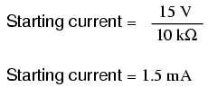

This chapter explores the response of capacitors and inductors to sudden changes in DC voltage (called a transient voltage), when wired in series with a resistor. Unlike resistors, which respond instantaneously to applied voltage, capacitors and inductors react over time as they absorb and release energy.
Because capacitors store energy in the form of an electric field, they tend to act like small secondary-cell batteries, being able to store and release electrical energy. A fully discharged capacitor maintains zero volts across its terminals, and a charged capacitor maintains a steady quantity of voltage across its terminals, just like a battery. When capacitors are placed in a circuit with other sources of voltage, they will absorb energy from those sources, just as a secondary-cell battery will become charged as a result of being connected to a generator. A fully discharged capacitor, having a terminal voltage of zero, will initially act as a short-circuit when attached to a source of voltage, drawing maximum current as it begins to build a charge. Over time, the capacitor's terminal voltage rises to meet the applied voltage from the source, and the current through the capacitor decreases correspondingly. Once the capacitor has reached the full voltage of the source, it will stop drawing current from it, and behave essentially as an open-circuit.
When the switch is first closed, the voltage across the capacitor (which we were told was fully discharged) is zero volts; thus, it first behaves as though it were a short-circuit. Over time, the capacitor voltage will rise to equal battery voltage, ending in a condition where the capacitor behaves as an open-circuit. Current through the circuit is determined by the difference in voltage between the battery and the capacitor, divided by the resistance of 10 kΩ. As the capacitor voltage approaches the battery voltage, the current approaches zero. Once the capacitor voltage has reached 15 volts, the current will be exactly zero. Let's see how this works using real values:
--------------------------------------------- | Time | Battery | Capacitor | Current | |(seconds) | voltage | voltage | | |-------------------------------------------| | 0 | 15 V | 0 V | 1500 uA | |-------------------------------------------| | 0.5 | 15 V | 5.902 V | 909.8 uA | |-------------------------------------------| | 1 | 15 V | 9.482 V | 551.8 uA | |-------------------------------------------| | 2 | 15 V | 12.970 V | 203.0 uA | |-------------------------------------------| | 3 | 15 V | 14.253 V | 74.68 uA | |-------------------------------------------| | 4 | 15 V | 14.725 V | 27.47 uA | |-------------------------------------------| | 5 | 15 V | 14.899 V | 10.11 uA | |-------------------------------------------| | 6 | 15 V | 14.963 V | 3.718 uA | |-------------------------------------------| | 10 | 15 V | 14.999 V | 0.068 uA | ---------------------------------------------
The capacitor voltage's approach to 15 volts and the current's approach to zero over time is what a mathematician would call asymptotic: that is, they both approach their final values, getting closer and closer over time, but never exactly reaches their destinations. For all practical purposes, though, we can say that the capacitor voltage will eventually reach 15 volts and that the current will eventually equal zero.
Using the SPICE circuit analysis program, we can chart this asymptotic buildup of capacitor voltage and decay of capacitor current in a more graphical form (capacitor current is plotted in terms of voltage drop across the resistor, using the resistor as a shunt to measure current):
capacitor charging v1 1 0 dc 15 r1 1 2 10k c1 2 0 100u ic=0 .tran .5 10 uic .plot tran v(2,0) v(1,2) .end
legend: *: v(2) Capacitor voltage +: v(1,2) Capacitor current time v(2) (*+)----------- 0.000E+00 5.000E+00 1.000E+01 1.500E+01 - - - - - - - - - - - - - - - - - - - - - - - - - - - - - - - - - 0.000E+00 5.976E-05 * . . + 5.000E-01 5.881E+00 . . * + . . 1.000E+00 9.474E+00 . .+ *. . 1.500E+00 1.166E+01 . + . . * . 2.000E+00 1.297E+01 . + . . * . 2.500E+00 1.377E+01 . + . . * . 3.000E+00 1.426E+01 . + . . * . 3.500E+00 1.455E+01 .+ . . *. 4.000E+00 1.473E+01 .+ . . *. 4.500E+00 1.484E+01 + . . * 5.000E+00 1.490E+01 + . . * 5.500E+00 1.494E+01 + . . * 6.000E+00 1.496E+01 + . . * 6.500E+00 1.498E+01 + . . * 7.000E+00 1.499E+01 + . . * 7.500E+00 1.499E+01 + . . * 8.000E+00 1.500E+01 + . . * 8.500E+00 1.500E+01 + . . * 9.000E+00 1.500E+01 + . . * 9.500E+00 1.500E+01 + . . * 1.000E+01 1.500E+01 + . . * - - - - - - - - - - - - - - - - - - - - - - - - - - - - - - - - -
As you can see, I have used the .plot command in the netlist instead of the more familiar .print command. This generates a pseudo-graphic plot of figures on the computer screen using text characters. SPICE plots graphs in such a way that time is on the vertical axis (going down) and amplitude (voltage/current) is plotted on the horizontal (right=more; left=less). Notice how the voltage increases (to the right of the plot) very quickly at first, then tapering off as time goes on. Current also changes very quickly at first then levels off as time goes on, but it is approaching minimum (left of scale) while voltage approaches maximum.
Inductors have the exact opposite characteristics of capacitors. Whereas capacitors store energy in an electric field (produced by the voltage between two plates), inductors store energy in a magnetic field (produced by the current through wire). Thus, while the stored energy in a capacitor tries to maintain a constant voltage across its terminals, the stored energy in an inductor tries to maintain a constant current through its windings. Because of this, inductors oppose changes in current, and act precisely the opposite of capacitors, which oppose changes in voltage. A fully discharged inductor (no magnetic field), having zero current through it, will initially act as an open-circuit when attached to a source of voltage (as it tries to maintain zero current), dropping maximum voltage across its leads. Over time, the inductor's current rises to the maximum value allowed by the circuit, and the terminal voltage decreases correspondingly. Once the inductor's terminal voltage has decreased to a minimum (zero for a "perfect" inductor), the current will stay at a maximum level, and it will behave essentially as a short-circuit.
When the switch is first closed, the voltage across the inductor will immediately jump to battery voltage (acting as though it were an open-circuit) and decay down to zero over time (eventually acting as though it were a short-circuit). Voltage across the inductor is determined by calculating how much voltage is being dropped across R, given the current through the inductor, and subtracting that voltage value from the battery to see what's left. When the switch is first closed, the current is zero, then it increases over time until it is equal to the battery voltage divided by the series resistance of 1 Ω. This behavior is precisely opposite that of the series resistor-capacitor circuit, where current started at a maximum and capacitor voltage at zero. Let's see how this works using real values:
--------------------------------------------- | Time | Battery | Inductor | Current | |(seconds) | voltage | voltage | | |-------------------------------------------| | 0 | 15 V | 15 V | 0 | |-------------------------------------------| | 0.5 | 15 V | 9.098 V | 5.902 A | |-------------------------------------------| | 1 | 15 V | 5.518 V | 9.482 A | |-------------------------------------------| | 2 | 15 V | 2.030 V | 12.97 A | |-------------------------------------------| | 3 | 15 V | 0.747 V | 14.25 A | |-------------------------------------------| | 4 | 15 V | 0.275 V | 14.73 A | |-------------------------------------------| | 5 | 15 V | 0.101 V | 14.90 A | |-------------------------------------------| | 6 | 15 V | 37.181 mV | 14.96 A | |-------------------------------------------| | 10 | 15 V | 0.681 mV | 14.99 A | ---------------------------------------------
Just as with the RC circuit, the inductor voltage's approach to 0 volts and the current's approach to 15 amps over time is asymptotic. For all practical purposes, though, we can say that the inductor voltage will eventually reach 0 volts and that the current will eventually equal the maximum of 15 amps.
Again, we can use the SPICE circuit analysis program to chart this asymptotic decay of inductor voltage and buildup of inductor current in a more graphical form (inductor current is plotted in terms of voltage drop across the resistor, using the resistor as a shunt to measure current):
inductor charging v1 1 0 dc 15 r1 1 2 1 l1 2 0 1 ic=0 .tran .5 10 uic .plot tran v(2,0) v(1,2) .end
legend: *: v(2) Inductor voltage +: v(1,2) Inductor current time v(2) (*+)------------ 0.000E+00 5.000E+00 1.000E+01 1.500E+01 - - - - - - - - - - - - - - - - - - - - - - - - - - - - - - - - - 0.000E+00 1.500E+01 + . . * 5.000E-01 9.119E+00 . . + * . . 1.000E+00 5.526E+00 . .* +. . 1.500E+00 3.343E+00 . * . . + . 2.000E+00 2.026E+00 . * . . + . 2.500E+00 1.226E+00 . * . . + . 3.000E+00 7.429E-01 . * . . + . 3.500E+00 4.495E-01 .* . . +. 4.000E+00 2.724E-01 .* . . +. 4.500E+00 1.648E-01 * . . + 5.000E+00 9.987E-02 * . . + 5.500E+00 6.042E-02 * . . + 6.000E+00 3.662E-02 * . . + 6.500E+00 2.215E-02 * . . + 7.000E+00 1.343E-02 * . . + 7.500E+00 8.123E-03 * . . + 8.000E+00 4.922E-03 * . . + 8.500E+00 2.978E-03 * . . + 9.000E+00 1.805E-03 * . . + 9.500E+00 1.092E-03 * . . + 1.000E+01 6.591E-04 * . . + - - - - - - - - - - - - - - - - - - - - - - - - - - - - - - - - -
Notice how the voltage decreases (to the left of the plot) very quickly at first, then tapering off as time goes on. Current also changes very quickly at first then levels off as time goes on, but it is approaching maximum (right of scale) while voltage approaches minimum.
There's a sure way to calculate any of the values in a reactive DC circuit over time. The first step is to identify the starting and final values for whatever quantity the capacitor or inductor opposes change in; that is, whatever quantity the reactive component is trying to hold constant. For capacitors, this quantity is voltage; for inductors, this quantity is current. When the switch in a circuit is closed (or opened), the reactive component will attempt to maintain that quantity at the same level as it was before the switch transition, so that value is to be used for the "starting" value. The final value for this quantity is whatever that quantity will be after an infinite amount of time. This can be determined by analyzing a capacitive circuit as though the capacitor was an open-circuit, and an inductive circuit as though the inductor was a short-circuit, because that is what these components behave as when they've reached "full charge," after an infinite amount of time.
The next step is to calculate the time constant of the circuit: the amount of time it takes for voltage or current values to change approximately 63 percent from their starting values to their final values in a transient situation. In a series RC circuit, the time constant is equal to the total resistance in ohms multiplied by the total capacitance in farads. For a series L/R circuit, it is the total inductance in henrys divided by the total resistance in ohms. In either case, the time constant is expressed in units of seconds and symbolized by the Greek letter "tau" (τ):
The rise and fall of circuit values such as voltage and current in response to a transient is, as was mentioned before, asymptotic. Being so, the values begin to rapidly change soon after the transient and settle down over time. If plotted on a graph, the approach to the final values of voltage and current form exponential curves.
As was stated before, one time constant is the amount of time it takes for any of these values to change about 63 percent from their starting values to their (ultimate) final values. For every time constant, these values move (approximately) 63 percent closer to their eventual goal. The mathematical formula for determining the precise percentage is quite simple:
The letter e stands for Euler's constant, which is approximately 2.7182818. It is derived from calculus techniques, after mathematically analyzing the asymptotic approach of the circuit values. After one time constant's worth of time, the percentage of change from starting value to final value is:
After two time constant's worth of time, the percentage of change from starting value to final value is:
After ten time constant's worth of time, the percentage is:
The more time that passes since the transient application of voltage from the battery, the larger the value of the denominator in the fraction, which makes for a smaller value for the whole fraction, which makes for a grand total (1 minus the fraction) approaching 1, or 100 percent.
We can make a more universal formula out of this one for the determination of voltage and current values in transient circuits, by multiplying this quantity by the difference between the final and starting circuit values:
Let's analyze the voltage rise on the series resistor-capacitor circuit shown at the beginning of the chapter.
Note that we're choosing to analyze voltage because that is the quantity capacitors tend to hold constant. Although the formula works quite well for current, the starting and final values for current are actually derived from the capacitor's voltage, so calculating voltage is a more direct method. The resistance is 10 kΩ, and the capacitance is 100 µF (microfarads). Since the time constant (τ) for an RC circuit is the product of resistance and capacitance, we obtain a value of 1 second:

If the capacitor starts in a totally discharged state (0 volts), then we can use that value of voltage for a "starting" value. The final value, of course, will be the battery voltage (15 volts). Our universal formula for capacitor voltage in this circuit looks like this:
So, after 7.25 seconds of applying voltage through the closed switch, our capacitor voltage will have increased by:
Since we started at a capacitor voltage of 0 volts, this increase of 14.989 volts means that we have 14.989 volts after 7.25 seconds.
The same formula will work for determining current in that circuit, too. Since we know that a discharged capacitor initially acts like a short-circuit, the starting current will be the maximum amount possible: 15 volts (from the battery) divided by 10 kΩ (the only opposition to current in the circuit at the beginning):

We also know that the final current will be zero, since the capacitor will eventually behave as an open-circuit, meaning that eventually no electrons will flow in the circuit. Now that we know both the starting and final current values, we can use our universal formula to determine the current after 7.25 seconds of switch closure in the same RC circuit:
Note that the figure obtained for change is negative, not positive! This tells us that current has decreased rather than increased with the passage of time. Since we started at a current of 1.5 mA, this decrease (-1.4989 mA) means that we have 0.001065 mA (1.065 µA) after 7.25 seconds.
We could have also determined the circuit current at time=7.25 seconds by subtracting the capacitor's voltage (14.989 volts) from the battery's voltage (15 volts) to obtain the voltage drop across the 10 kΩ resistor, then figuring current through the resistor (and the whole series circuit) with Ohm's Law (I=E/R). Either way, we should obtain the same answer:

The universal time constant formula also works well for analyzing inductive circuits. Let's apply it to our example L/R circuit in the beginning of the chapter:
With an inductance of 1 henry and a series resistance of 1 Ω, our time constant is equal to 1 second:

Because this is an inductive circuit, and we know that inductors oppose change in current, we'll set up our time constant formula for starting and final values of current. If we start with the switch in the open position, the current will be equal to zero, so zero is our starting current value. After the switch has been left closed for a long time, the current will settle out to its final value, equal to the source voltage divided by the total circuit resistance (I=E/R), or 15 amps in the case of this circuit.
If we desired to determine the value of current at 3.5 seconds, we would apply the universal time constant formula as such:
Given the fact that our starting current was zero, this leaves us at a circuit current of 14.547 amps at 3.5 seconds' time.
Determining voltage in an inductive circuit is best accomplished by first figuring circuit current and then calculating voltage drops across resistances to find what's left to drop across the inductor. With only one resistor in our example circuit (having a value of 1 Ω), this is rather easy:
Subtracted from our battery voltage of 15 volts, this leaves 0.453 volts across the inductor at time=3.5 seconds.
It is often perplexing to new students of electronics why the time-constant calculation for an inductive circuit is different from that of a capacitive circuit. For a resistor-capacitor circuit, the time constant (in seconds) is calculated from the product (multiplication) of resistance in ohms and capacitance in farads: τ=RC. However, for a resistor-inductor circuit, the time constant is calculated from the quotient (division) of inductance in henrys over the resistance in ohms: τ=L/R.
This difference in calculation has a profound impact on the qualitative analysis of transient circuit response. Resistor-capacitor circuits respond quicker with low resistance and slower with high resistance; resistor-inductor circuits are just the opposite, responding quicker with high resistance and slower with low resistance. While capacitive circuits seem to present no intuitive trouble for the new student, inductive circuits tend to make less sense.
Key to the understanding of transient circuits is a firm grasp on the concept of energy transfer and the electrical nature of it. Both capacitors and inductors have the ability to store quantities of energy, the capacitor storing energy in the medium of an electric field and the inductor storing energy in the medium of a magnetic field. A capacitor's electrostatic energy storage manifests itself in the tendency to maintain a constant voltage across the terminals. An inductor's electromagnetic energy storage manifests itself in the tendency to maintain a constant current through it.
Let's consider what happens to each of these reactive components in a condition of discharge: that is, when energy is being released from the capacitor or inductor to be dissipated in the form of heat by a resistor:
In either case, heat dissipated by the resistor constitutes energy leaving the circuit, and as a consequence the reactive component loses its store of energy over time, resulting in a measurable decrease of either voltage (capacitor) or current (inductor) expressed on the graph. The more power dissipated by the resistor, the faster this discharging action will occur, because power is by definition the rate of energy transfer over time.
Therefore, a transient circuit's time constant will be dependent upon the resistance of the circuit. Of course, it is also dependent upon the size (storage capacity) of the reactive component, but since the relationship of resistance to time constant is the issue of this section, we'll focus on the effects of resistance alone. A circuit's time constant will be less (faster discharging rate) if the resistance value is such that it maximizes power dissipation (rate of energy transfer into heat). For a capacitive circuit where stored energy manifests itself in the form of a voltage, this means the resistor must have a low resistance value so as to maximize current for any given amount of voltage (given voltage times high current equals high power). For an inductive circuit where stored energy manifests itself in the form of a current, this means the resistor must have a high resistance value so as to maximize voltage drop for any given amount of current (given current times high voltage equals high power).
This may be analogously understood by considering capacitive and inductive energy storage in mechanical terms. Capacitors, storing energy electrostatically, are reservoirs of potential energy. Inductors, storing energy electromagnetically (electrodynamically), are reservoirs of kinetic energy. In mechanical terms, potential energy can be illustrated by a suspended mass, while kinetic energy can be illustrated by a moving mass. Consider the following illustration as an analogy of a capacitor:
The cart, sitting at the top of a slope, possesses potential energy due to the influence of gravity and its elevated position on the hill. If we consider the cart's braking system to be analogous to the resistance of the system and the cart itself to be the capacitor, what resistance value would facilitate rapid release of that potential energy? Minimum resistance (no brakes) would diminish the cart's altitude quickest, of course! Without any braking action, the cart will freely roll downhill, thus expending that potential energy as it loses height. With maximum braking action (brakes firmly set), the cart will refuse to roll (or it will roll very slowly) and it will hold its potential energy for a long period of time. Likewise, a capacitive circuit will discharge rapidly if its resistance is low and discharge slowly if its resistance is high.
Now let's consider a mechanical analogy for an inductor, showing its stored energy in kinetic form:
This time the cart is on level ground, already moving. Its energy is kinetic (motion), not potential (height). Once again if we consider the cart's braking system to be analogous to circuit resistance and the cart itself to be the inductor, what resistance value would facilitate rapid release of that kinetic energy? Maximum resistance (maximum braking action) would slow it down quickest, of course! With maximum braking action, the cart will quickly grind to a halt, thus expending its kinetic energy as it slows down. Without any braking action, the cart will be free to roll on indefinitely (barring any other sources of friction like aerodynamic drag and rolling resistance), and it will hold its kinetic energy for a long period of time. Likewise, an inductive circuit will discharge rapidly if its resistance is high and discharge slowly if its resistance is low.
Hopefully this explanation sheds more light on the subject of time constants and resistance, and why the relationship between the two is opposite for capacitive and inductive circuits.
There are circumstances when you may need to analyze a DC reactive circuit when the starting values of voltage and current are not respective of a fully "discharged" state. In other words, the capacitor might start at a partially-charged condition instead of starting at zero volts, and an inductor might start with some amount of current already through it, instead of zero as we have been assuming so far. Take this circuit as an example, starting with the switch open and finishing with the switch in the closed position:
Since this is an inductive circuit, we'll start our analysis by determining the start and end values for current. This step is vitally important when analyzing inductive circuits, as the starting and ending voltage can only be known after the current has been determined! With the switch open (starting condition), there is a total (series) resistance of 3 Ω, which limits the final current in the circuit to 5 amps:
So, before the switch is even closed, we have a current through the inductor of 5 amps, rather than starting from 0 amps as in the previous inductor example. With the switch closed (the final condition), the 1 Ω resistor is shorted across (bypassed), which changes the circuit's total resistance to 2 Ω. With the switch closed, the final value for current through the inductor would then be:
So, the inductor in this circuit has a starting current of 5 amps and an ending current of 7.5 amps. Since the "timing" will take place during the time that the switch is closed and R2 is shorted past, we need to calculate our time constant from L1 and R1: 1 Henry divided by 2 Ω, or τ = 1/2 second. With these values, we can calculate what will happen to the current over time. The voltage across the inductor will be calculated by multiplying the current by 2 (to arrive at the voltage across the 2 Ω resistor), then subtracting that from 15 volts to see what's left. If you realize that the voltage across the inductor starts at 5 volts (when the switch is first closed) and decays to 0 volts over time, you can also use these figures for starting/ending values in the general formula and derive the same results:
--------------------------------------------- | Time | Battery | Inductor | Current | |(seconds) | voltage | voltage | | |-------------------------------------------| | 0 | 15 V | 5 V | 5 A | |-------------------------------------------| | 0.1 | 15 V | 4.094 V | 5.453 A | |-------------------------------------------| | 0.25 | 15 V | 3.033 V | 5.984 A | |-------------------------------------------| | 0.5 | 15 V | 1.839 V | 6.580 A | |-------------------------------------------| | 1 | 15 V | 0.677 V | 7.162 A | |-------------------------------------------| | 2 | 15 V | 0.092 V | 7.454 A | |-------------------------------------------| | 3 | 15 V | 0.012 V | 7.494 A | ---------------------------------------------
What do we do if we come across a circuit more complex than the simple series configurations we've seen so far? Take this circuit as an example:
The simple time constant formula (τ=RC) is based on a simple series resistance connected to the capacitor. For that matter, the time constant formula for an inductive circuit (τ=L/R) is also based on the assumption of a simple series resistance. So, what can we do in a situation like this, where resistors are connected in a series-parallel fashion with the capacitor (or inductor)?
The answer comes from our studies in network analysis. Thevenin's Theorem tells us that we can reduce any linear circuit to an equivalent of one voltage source, one series resistance, and a load component through a couple of simple steps. To apply Thevenin's Theorem to our scenario here, we'll regard the reactive component (in the above example circuit, the capacitor) as the load and remove it temporarily from the circuit to find the Thevenin voltage and Thevenin resistance. Then, once we've determined the Thevenin equivalent circuit values, we'll re-connect the capacitor and solve for values of voltage or current over time as we've been doing so far.
After identifying the capacitor as the "load," we remove it from the circuit and solve for voltage across the load terminals (assuming, of course, that the switch is closed):
This step of the analysis tells us that the voltage across the load terminals (same as that across resistor R2) will be 1.8182 volts with no load connected. With a little reflection, it should be clear that this will be our final voltage across the capacitor, seeing as how a fully-charged capacitor acts like an open circuit, drawing zero current. We will use this voltage value for our Thevenin equivalent circuit source voltage.
Now, to solve for our Thevenin resistance, we need to eliminate all power sources in the original circuit and calculate resistance as seen from the load terminals:
Re-drawing our circuit as a Thevenin equivalent, we get this:
Our time constant for this circuit will be equal to the Thevenin resistance times the capacitance (τ=RC). With the above values, we calculate:

Now, we can solve for voltage across the capacitor directly with our universal time constant formula. Let's calculate for a value of 60 milliseconds. Because this is a capacitive formula, we'll set our calculations up for voltage:
Again, because our starting value for capacitor voltage was assumed to be zero, the actual voltage across the capacitor at 60 milliseconds is equal to the amount of voltage change from zero, or 1.3325 volts.
We could go a step further and demonstrate the equivalence of the Thevenin RC circuit and the original circuit through computer analysis. I will use the SPICE analysis program to demonstrate this:
Comparison RC analysis * first, the netlist for the original circuit: v1 1 0 dc 20 r1 1 2 2k r2 2 3 500 r3 3 0 3k c1 2 3 100u ic=0 * then, the netlist for the thevenin equivalent: v2 4 0 dc 1.818182 r4 4 5 454.545 c2 5 0 100u ic=0 * now, we analyze for a transient, sampling every .005 seconds * over a time period of .37 seconds total, printing a list of * values for voltage across the capacitor in the original * circuit (between modes 2 and 3) and across the capacitor in * the thevenin equivalent circuit (between nodes 5 and 0) .tran .005 0.37 uic .print tran v(2,3) v(5,0) .end
time v(2,3) v(5)
0.000E+00 4.803E-06 4.803E-06
5.000E-03 1.890E-01 1.890E-01
1.000E-02 3.580E-01 3.580E-01
1.500E-02 5.082E-01 5.082E-01
2.000E-02 6.442E-01 6.442E-01
2.500E-02 7.689E-01 7.689E-01
3.000E-02 8.772E-01 8.772E-01
3.500E-02 9.747E-01 9.747E-01
4.000E-02 1.064E+00 1.064E+00
4.500E-02 1.142E+00 1.142E+00
5.000E-02 1.212E+00 1.212E+00
5.500E-02 1.276E+00 1.276E+00
6.000E-02 1.333E+00 1.333E+00
6.500E-02 1.383E+00 1.383E+00
7.000E-02 1.429E+00 1.429E+00
7.500E-02 1.470E+00 1.470E+00
8.000E-02 1.505E+00 1.505E+00
8.500E-02 1.538E+00 1.538E+00
9.000E-02 1.568E+00 1.568E+00
9.500E-02 1.594E+00 1.594E+00
1.000E-01 1.617E+00 1.617E+00
1.050E-01 1.638E+00 1.638E+00
1.100E-01 1.657E+00 1.657E+00
1.150E-01 1.674E+00 1.674E+00
1.200E-01 1.689E+00 1.689E+00
1.250E-01 1.702E+00 1.702E+00
1.300E-01 1.714E+00 1.714E+00
1.350E-01 1.725E+00 1.725E+00
1.400E-01 1.735E+00 1.735E+00
1.450E-01 1.744E+00 1.744E+00
1.500E-01 1.752E+00 1.752E+00
1.550E-01 1.758E+00 1.758E+00
1.600E-01 1.765E+00 1.765E+00
1.650E-01 1.770E+00 1.770E+00
1.700E-01 1.775E+00 1.775E+00
1.750E-01 1.780E+00 1.780E+00
1.800E-01 1.784E+00 1.784E+00
1.850E-01 1.787E+00 1.787E+00
1.900E-01 1.791E+00 1.791E+00
1.950E-01 1.793E+00 1.793E+00
2.000E-01 1.796E+00 1.796E+00
2.050E-01 1.798E+00 1.798E+00
2.100E-01 1.800E+00 1.800E+00
2.150E-01 1.802E+00 1.802E+00
2.200E-01 1.804E+00 1.804E+00
2.250E-01 1.805E+00 1.805E+00
2.300E-01 1.807E+00 1.807E+00
2.350E-01 1.808E+00 1.808E+00
2.400E-01 1.809E+00 1.809E+00
2.450E-01 1.810E+00 1.810E+00
2.500E-01 1.811E+00 1.811E+00
2.550E-01 1.812E+00 1.812E+00
2.600E-01 1.812E+00 1.812E+00
2.650E-01 1.813E+00 1.813E+00
2.700E-01 1.813E+00 1.813E+00
2.750E-01 1.814E+00 1.814E+00
2.800E-01 1.814E+00 1.814E+00
2.850E-01 1.815E+00 1.815E+00
2.900E-01 1.815E+00 1.815E+00
2.950E-01 1.815E+00 1.815E+00
3.000E-01 1.816E+00 1.816E+00
3.050E-01 1.816E+00 1.816E+00
3.100E-01 1.816E+00 1.816E+00
3.150E-01 1.816E+00 1.816E+00
3.200E-01 1.817E+00 1.817E+00
3.250E-01 1.817E+00 1.817E+00
3.300E-01 1.817E+00 1.817E+00
3.350E-01 1.817E+00 1.817E+00
3.400E-01 1.817E+00 1.817E+00
3.450E-01 1.817E+00 1.817E+00
3.500E-01 1.817E+00 1.817E+00
3.550E-01 1.817E+00 1.817E+00
3.600E-01 1.818E+00 1.818E+00
3.650E-01 1.818E+00 1.818E+00
3.700E-01 1.818E+00 1.818E+00
At every step along the way of the analysis, the capacitors in the two circuits (original circuit versus Thevenin equivalent circuit) are at equal voltage, thus demonstrating the equivalence of the two circuits.
Sometimes it is necessary to determine the length of time that a reactive circuit will take to reach a predetermined value. This is especially true in cases where we're designing an RC or L/R circuit to perform a precise timing function. To calculate this, we need to modify our "Universal time constant formula." The original formula looks like this:
However, we want to solve for time, not the amount of change. To do this, we algebraically manipulate the formula so that time is all by itself on one side of the equal sign, with all the rest on the other side:

The ln designation just to the right of the time constant term is the natural logarithm function: the exact reverse of taking the power of e. In fact, the two functions (powers of e and natural logarithms) can be related as such:
If ex = a, then ln a = x.
If ex = a, then the natural logarithm of a will give you x: the power that e must be was raised to in order to produce a.
Let's see how this all works on a real example circuit. Taking the same resistor-capacitor circuit from the beginning of the chapter, we can work "backwards" from previously determined values of voltage to find how long it took to get there.
The time constant is still the same amount: 1 second (10 kΩ times 100 µF), and the starting/final values remain unchanged as well (EC = 0 volts starting and 15 volts final). According to our chart at the beginning of the chapter, the capacitor would be charged to 12.970 volts at the end of 2 seconds. Let's plug 12.970 volts in as the "Change" for our new formula and see if we arrive at an answer of 2 seconds:
Indeed, we end up with a value of 2 seconds for the time it takes to go from 0 to 12.970 volts across the capacitor. This variation of the universal time constant formula will work for all capacitive and inductive circuits, both "charging" and "discharging," provided the proper values of time constant, Start, Final, and Change are properly determined beforehand. Remember, the most important step in solving these problems is the initial set-up. After that, its just a lot of button-pushing on your calculator!
Contributors to this chapter are listed in chronological order of their contributions, from most recent to first. See Appendix 2 (Contributor List) for dates and contact information.
Jason Starck (June 2000): HTML document formatting, which led to a much better-looking second edition.
Lessons In Electric Circuits copyright (C) 2000-2023 Tony R. Kuphaldt, under the terms and conditions of the CC BY License.